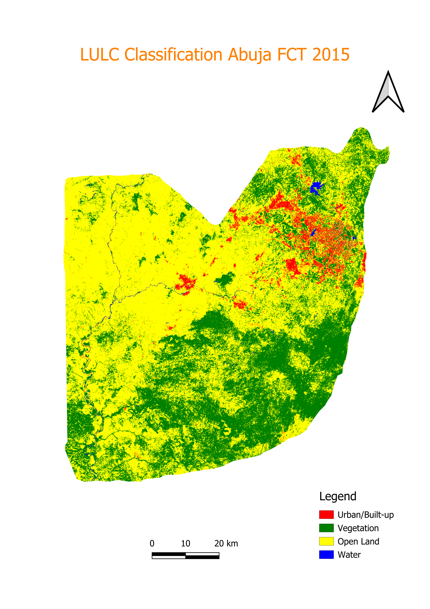
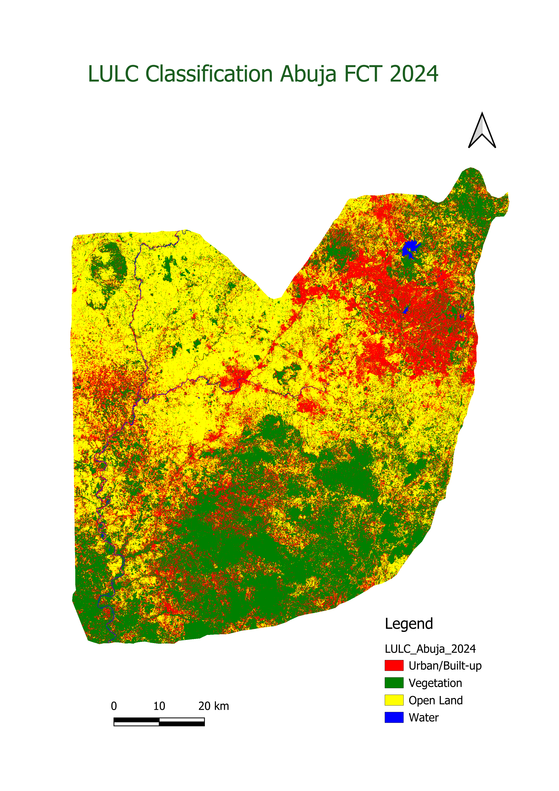
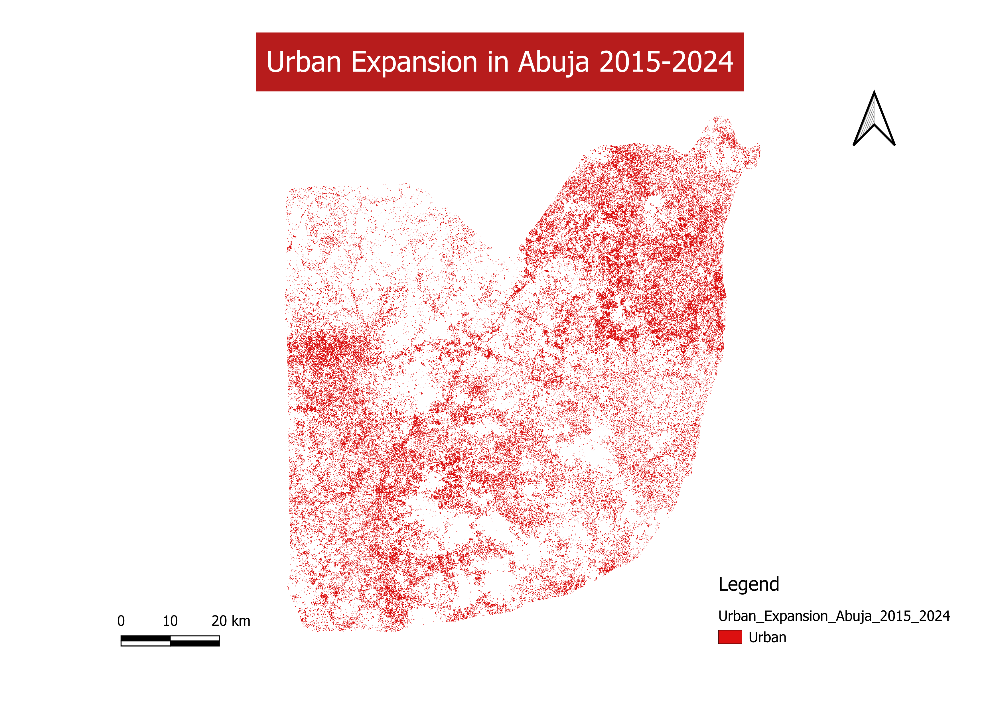

I analyzed land use and land cover changes across Nigeria's Federal Capital Territory using Landsat 8 and Sentinel-2 satellite imagery — uncovering how one of Africa's fastest-growing capitals reshaped its landscape over nine years.



I chose Abuja's Federal Capital Territory as my study area because it represents one of the most dramatic urban transformations on the African continent. Since its designation as Nigeria's capital, the FCT has attracted millions of residents and undergone explosive growth — making it an ideal case study for demonstrating change detection methodology with real-world significance.
Abuja consistently ranks among the most rapidly urbanizing cities on the continent, with the FCT attracting over 6 million residents.
My analysis captured over 424 km² of vegetation-to-open-land conversion in just nine years — consistent with long-term deforestation trends documented in the FCT since the 1980s.
I used Landsat 8 for 2015 and Sentinel-2 for 2024, applying band harmonization and spectral index normalization to ensure robust cross-sensor comparability.
I analyzed the entire Federal Capital Territory — not just the municipal area — to capture the full scope of urban sprawl into peripheral zones like Kuje, Gwagwalada, and Bwari.
I implemented a rigorous multi-step workflow entirely in Google Earth Engine — from raw satellite imagery acquisition through to validated classified outputs and area statistics.
I generated dry season composites (Nov–Mar) using median pixel compositing with cloud masking for both sensors, deliberately targeting the dry season to minimize cloud contamination over the FCT.
Cloud MaskingI renamed Landsat 8 bands to match Sentinel-2 equivalents, then computed NDVI, NDBI, and MNDWI and stacked them — giving the classifier 9 input features and improving cross-sensor class separability.
9 Input FeaturesI digitized 1,006 training points separately on the 2015 and 2024 imagery, ensuring each classifier learned the spectral signature of its own sensor rather than the other year's image.
1,006 PointsI trained independent 100-tree Random Forest classifiers for each year, classifying four LULC classes: Urban, Vegetation, Open Land, and Water.
100 TreesI used a 70/30 train-validation split to generate confusion matrices, overall accuracy, Kappa coefficients, and per-class producer and consumer accuracies — confirming both years exceeded the 80% publishable threshold.
70/30 SplitI combined both classified maps pixel-by-pixel to generate a transition matrix, then used GEE's pixel area reducer to calculate the area of every LULC transition in km².
Post-Classification| Year | Sensor | Resolution | Dataset ID | Date Range |
|---|---|---|---|---|
| 2015 | Landsat 8 OLI | 30m | LANDSAT/LC08/C02/T1_L2 | Nov 2015 – Mar 2016 |
| 2024 | Sentinel-2 MSI | 10m | COPERNICUS/S2_SR_HARMONIZED | Nov 2024 – Feb 2025 |
| Boundary | FAO GAUL | Vector | FAO/GAUL/2015/level1 | FCT Boundary |
Both of my classifications exceeded the 80% accuracy threshold widely accepted for publishable LULC studies. The results reveal a dramatic urban transformation across the FCT between 2015 and 2024.
By combining both classified maps pixel-by-pixel, I identified the dominant pathways of land transformation — revealing not just that change occurred, but precisely how each land cover type shifted between 2015 and 2024.
Side-by-side classified LULC maps for 2015 and 2024. I exported both as GeoTIFFs from Google Earth Engine — download links available on GitHub.
My complete GEE script, training sample methodology, accuracy tables, and exported GeoTIFF outputs are all available on GitHub. The script is fully reproducible — clone it and run it on your own study area.